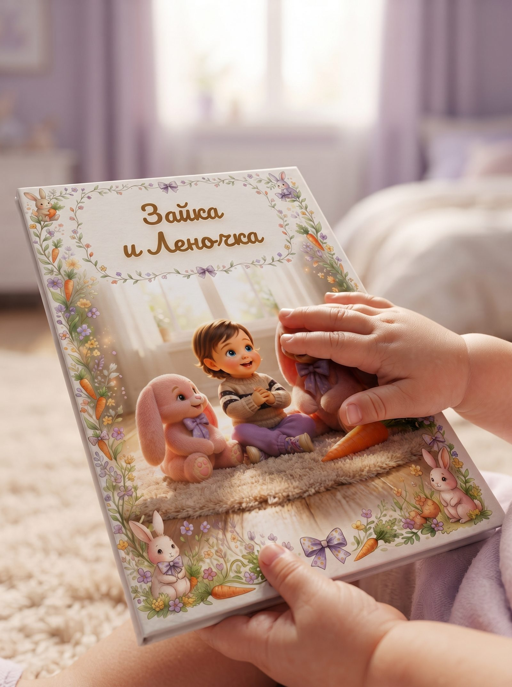
Это не просто красивое развлечение, а терапевтический инструмент, созданный мной лично под вашу ситуацию.
«Он был для меня по-настоящему живой!»
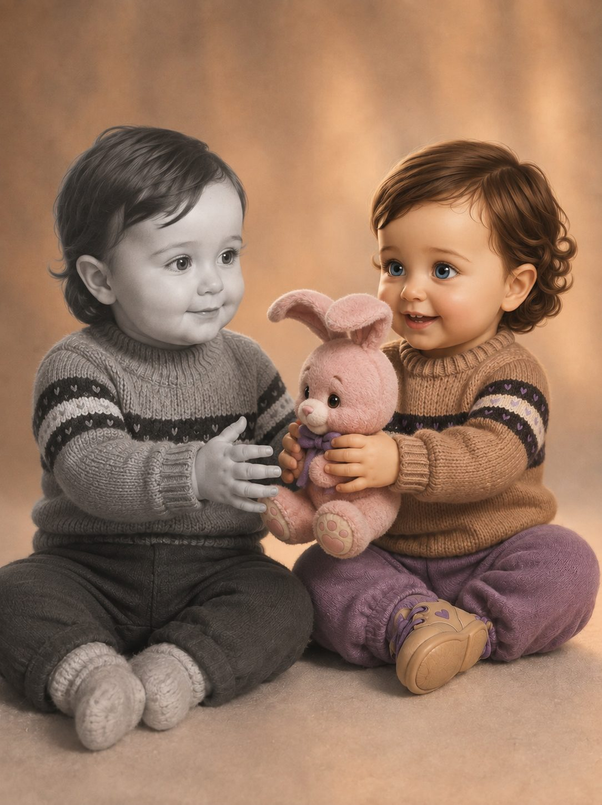
В детстве у меня была любимая игрушка — розовый заяц. Когда мне его подарили, мама говорит, я чуть не сошла с ума от счастья. Он был как живой для меня! И когда я сейчас приезжаю к родителям, всегда его обнимаю. До сих пор :)
И именно отсюда всё началось: я написала сказку для маленькой себя — как будто отправила послание себе в прошлое, чтобы сделать для своего внутреннего ребёнка драгоценный подарок. Сказка была направлена на работу с моим сильным страхом — остаться без мамы.
Я не могу вернуться в прошлое и отправить себе эту книжку. Но зато я могу это сделать для других детей, которые сейчас не могут справиться со своими сложностями.
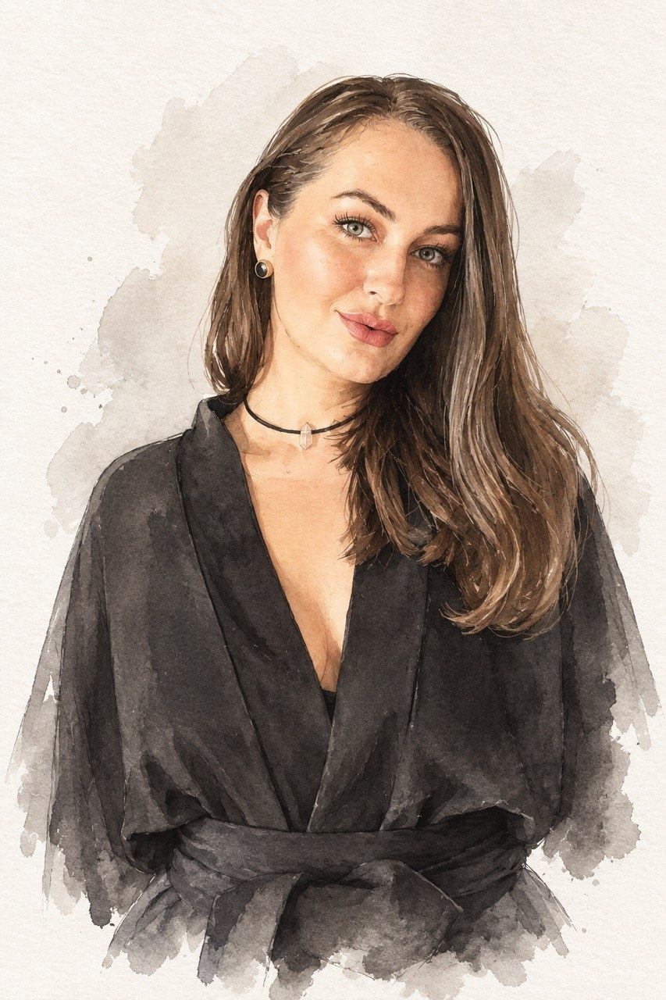
Как только я научилась читать и писать — начала придумывать истории и делать самодельные книжки. Это было любимым занятием в детстве, и потом писательство на всю жизнь осталось со мной.
Я уже 8 лет в психологии, и в этом проекте с любовью соединила свои психологические знания, страсть к сочинительству и творчество — так я максимально радую своего внутреннего ребенка и при этом создаю сказки, которые по-настоящему интересны и помогают другим детям.
Пишете мне о вашем ребёнке и в чем у него сейчас сложности.
Отвечаю на все вопросы и отправляю ссылку на бота.
Бот задаёт 25 вопросов, принимает фотографии и оплату, и передаёт мне все данные.
Я читаю анкету лично, задаю доп. вопросы, при необходимости прошу доп. фотографии, чтобы герои получились максимально узнаваемыми. Присылаю вам сценарий с пояснением, почему предлагаю именно такое развитие сюжета, и иллюстрацию главных героев до того, как отрисованы все остальные страницы.
После вашего согласия приступаю к созданию книги: 8 иллюстраций, артефакт из сказки, гайд для родителя. Отправляю готовый результат сразу в двух версиях - электронной (PDF) и в виде макета, готового для самостоятельной печати.
Расскажите мне о своём ребёнке и я скажу, подойдёт ли сказка для решения вашей задачи
Для самых маленьких детей главным героем становится игрушка, любимое животное или персонаж, а не сам ребёнок — так ему безопаснее прожить трудную тему, сохраняя эмоциональную дистанцию.
Для детей постарше сценарий строится иначе: сюжет более полный и сложный, а герой — ближе к самому ребёнку.
Возраст и особенности восприятия ребёнка учитываются на каждом этапе — от структуры истории до языка повествования, чтобы все заложенные смыслы по-настоящему усваивались, а не проходили мимо.
В анкете вы выбираете тональность истории - приключенческую, тёплую или весёлую, - и я пишу сценарий сразу в этой тональности, а не в общем шаблоне.
В каждую историю встроен предмет или символ из сюжета - то, что помогло герою. Он оформляется отдельным макетом для печати, чтобы часть сказки буквально появилась в жизни вашего ребёнка. Некоторые вещи из этой сказки существуют на самом деле.
Сказку создаю я, но не в одиночку. Я задаю терапевтическую логику, структуру и все смыслы, использую ИИ как инструмент для черновиков, а дальше переписываю и довожу текст до того состояния, под которым готова подписаться. За каждое слово в готовой книге отвечаю я.
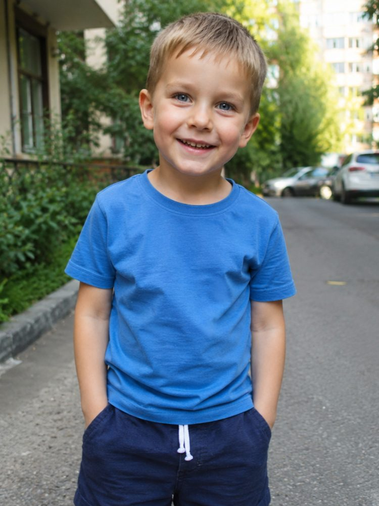
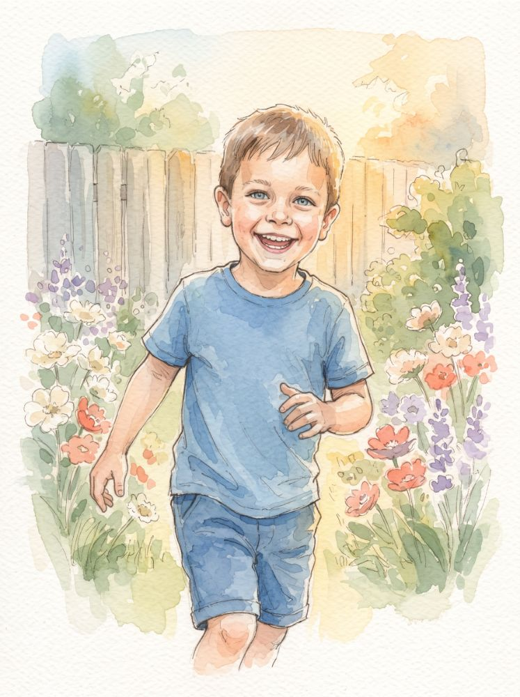
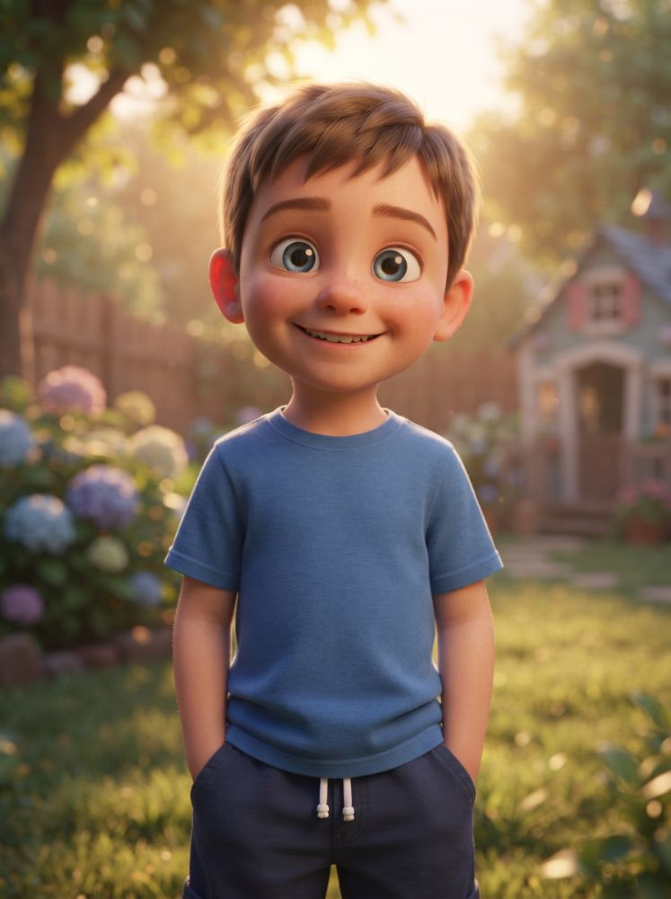
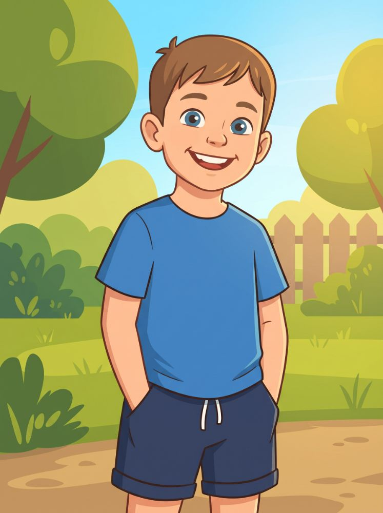
Технику иллюстраций выбираете вы.
На этапе согласования покажу, как будет выглядеть именно ваш герой.
Сказка — не универсальное решение. Если при первом общении до оплаты я пойму, что ситуация требует индивидуальной работы со специалистом — психологом или врачом — я честно об этом скажу и за работу не возьмусь. Такое уже было: я отказала одной мамочке, потому что понимала, что книга не поможет, а время и деньги будут потеряны.
Мне важно, чтобы сказка действительно работала. Если она сейчас не даст нужного вам результата — я скажу об этом прямо и подскажу, куда обратиться.
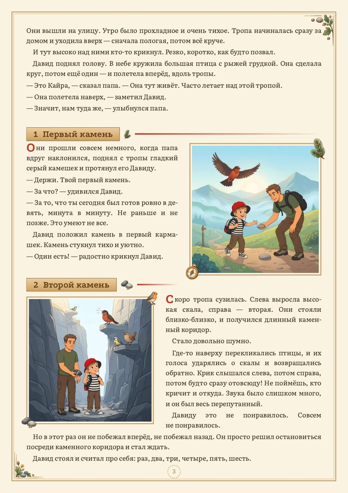
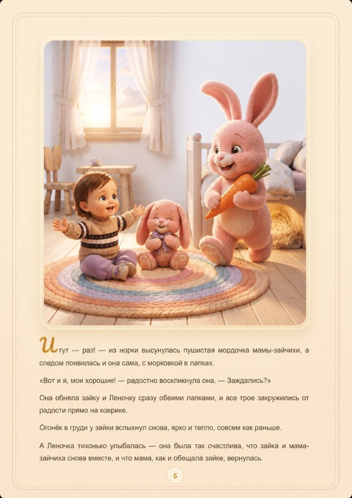
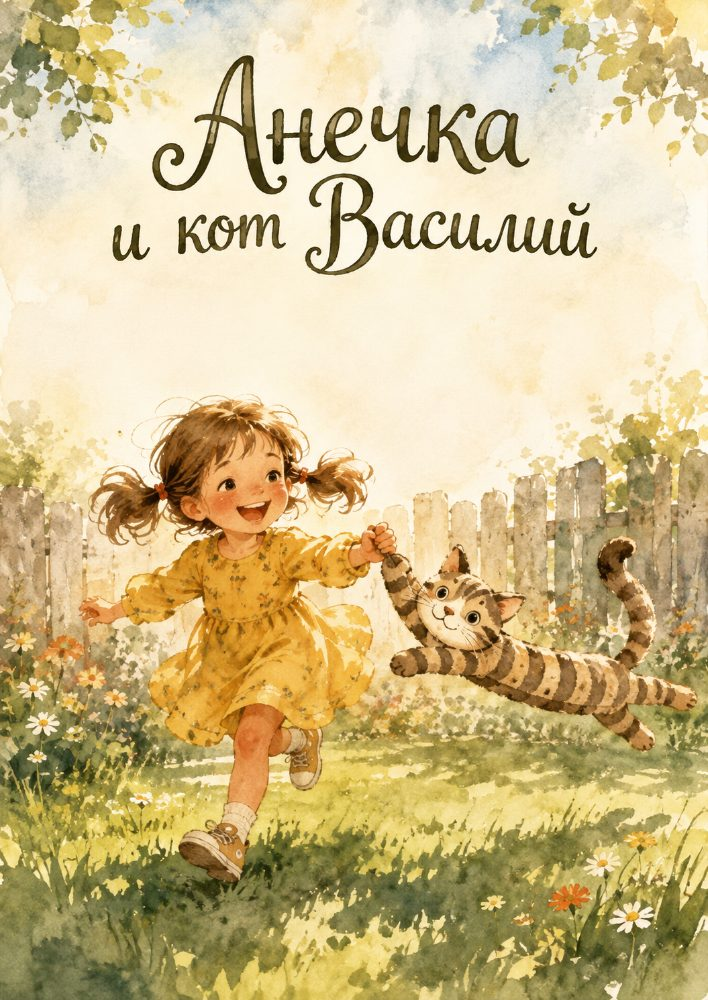
После анкеты. Читаю ваши ответы на интервью бота, задаю дополнительные вопросы, при необходимости прошу дополнительные фотографии, чтобы герои получились максимально узнаваемыми.
Сценарий. Присылаю варианты развития сюжета с пояснением, почему предлагаю именно это и в такой форме.
Главный герой. Показываю иллюстрацию персонажа до того, как отрисованы все остальные страницы. Не похож — переделываю.
Только после вашего «да» на каждом шаге я иду дальше. Поэтому финальная книга не может стать неожиданностью.
Если ошибка моя — исправляю бесплатно, всегда.
Опечатка, несоответствие деталей, герой получился непохожим на согласованный образ, что-то в тексте разошлось с тем, о чём мы договаривались.
Общий дизайн можно один раз поправить без доплаты.
Если после всех согласований вы решили изменить сюжет, тему или заменить все иллюстрации — это уже новая работа в полном объёме, и стоит она как новая книга. Именно поэтому мы согласуем каждый этап заранее: чтобы к финалу не было сюрпризов ни у вас, ни у меня.
Я работаю с детьми от 2 до 10 лет. Методика и структура сказки подбираются под возраст
7 500 ₽
За персонализированную книгу - сразу в двух версиях: электронной и готовой к печати.
Срок - до 10 рабочих дней. Если в работе нет очереди из других заказов - около 3 дней. Точный срок называю перед оплатой заказа, чтобы вы понимали, успеваем ли к нужной дате.
Сама печать и доставка бумажной книги в стоимость не входят - вы получаете готовый к печати файл и относите его в любую типографию сами.
Если после согласований вы полностью передумали (не ошибка с моей стороны, а смена сюжета, темы или иллюстраций) - новая работа оформляется как новый заказ, 7 500 ₽, потому что прорабатывается заново от и до.
До того как отрисованы все страницы, вы видите и утверждаете главного героя. Не похож — переделываю, это входит в стоимость.
Да, для этого я прошу фотографии и лично проверяю сходство перед тем, как двигаться дальше.
До 10 рабочих дней, часто быстрее — до 3 дней, если нет очереди из других заказов.
Там текст и иллюстрации генерирует нейросеть без проверки человеком — часто шаблонно, с ошибками и нестыковками от страницы к странице, к тому же там просто история про ребёнка, а не инструмент для работы с его психологическими сложностями. У меня — индивидуальная сказка с терапевтической логикой, которую выстраиваю я, психолог, текст я лично довожу до финала, создаю каждую иллюстрацию и проверяю на корректность, поддерживаю единый стиль.
Да, для черновиков и иллюстраций — но структуру, смыслы и финальный текст создаю и проверяю я. Подробнее — в разделе «Почему это работает».
Да, это входит в стоимость. Вместе с электронной версией вы получаете готовый макет книги для самостоятельной печати и письменную инструкцию, что сказать в типографии, что выбрать и на что посмотреть при приёмке. Вам останется только отдать файл в любую типографию - саму печать и доставку бумажной книги я не делаю.
Это предмет или символ из сюжета истории - то, что помогло герою справиться. Он появляется не случайно, а органично из сценария, и я оформляю его отдельным макетом для печати, чтобы ребёнок мог получить его в реальной жизни - как настоящее продолжение сказки.
Главным героем может стать животное, персонаж, которого придумаем вместе, или сам ребёнок — подберём вариант на этапе анкеты.
Нет, это разная форма воздействия на психику. Книга — творческий, образный, дополнительный инструмент, которым можно пользоваться хоть каждый день. Если по анкете я увижу, что ситуация требует индивидуальной работы со специалистом, я скажу об этом прямо и не возьмусь за книгу.
Скоро "в эфире": аудиоверсии книг, сказки для внутреннего ребёнка взрослых, подарочные книги для любого возраста, юморные и трогательные лав стори.
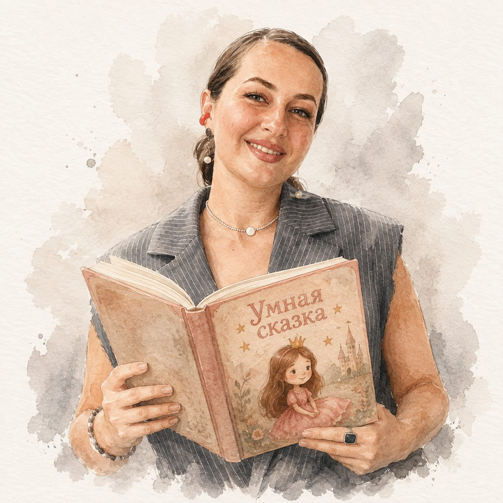
Напишите мне и мы вместе создадим сказку, которая станет особенной для вашего ребёнка